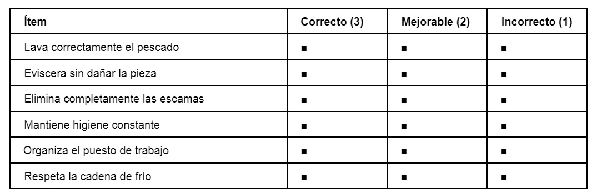
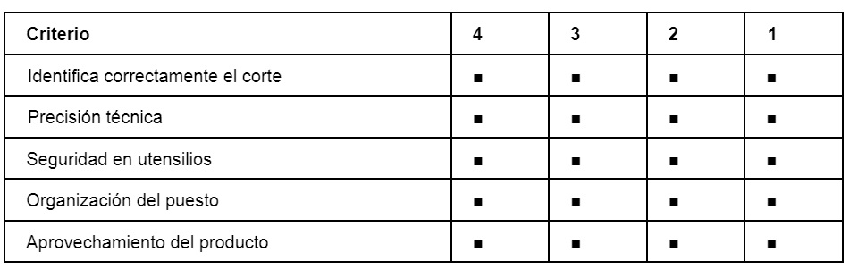
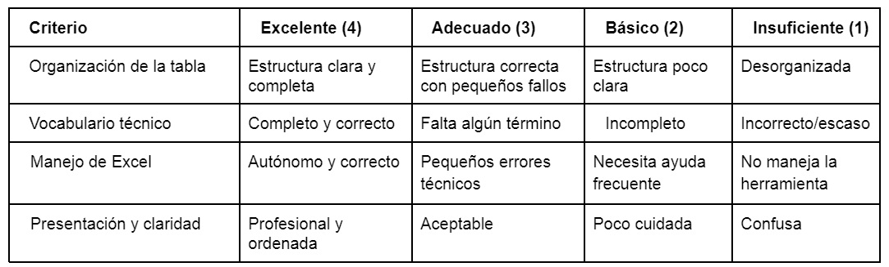

La evaluación del proyecto se plantea desde un enfoque competencial, combinando distintos instrumentos que permitan recoger información desde perspectivas complementarias (procedimental, práctica y digital). La evaluación no se concibe únicamente como un mecanismo de calificación, sino como una herramienta de mejora continua tanto para el alumnado como para la práctica docente. Esta combinación facilita la triangulación de datos y permite contrastar resultados, reduciendo sesgos y obteniendo una visión más ajustada del proceso de aprendizaje.
Instrumentos previstos (tres):
1) Escala de valoración (3 niveles) para la preelaboración del pescado.
2) Prueba práctica para los cortes del pescado.
3) Rúbrica analítica para el trabajo digital en Excel (vocabulario).
1. Escala de valoración (3 niveles) – Preelaboración del pescado
Finalidad del instrumento: evaluar el dominio de los procedimientos básicos de preelaboración del pescado (PPCCO) con especial atención a la higiene, la seguridad y la secuencia técnica.
Qué se evalúa en este momento: lavado, eviscerado sin deterioro del producto, eliminación de escamas, manipulación higiénica, organización del puesto y respeto de la cadena de frío. En esta fase se evalúa principalmente el proceso técnico (cómo se hace), más que el acabado estético.
Justificación del instrumento: se emplea una escala de tres niveles (Correcto–Mejorable–Incorrecto) porque permite valorar la calidad del procedimiento de forma ágil en el taller, sin la complejidad de una rúbrica extensa, y facilita la conversión de resultados a valores numéricos (3-2-1) para análisis posterior.
Recogida y tratamiento de datos: observación directa durante la práctica. Posteriormente, los registros pueden trasladarse a una hoja de cálculo para calcular medias por ítem, detectar patrones de error y priorizar refuerzos (por ejemplo, si el ítem “cadena de frío” acumula más “Incorrecto”).
Variables consideradas: nivel inicial de experiencia, coordinación motriz, nerviosismo, ritmo de trabajo y condiciones del puesto (espacio/material). Se distingue entre errores por desconocimiento (conceptual) y errores por ejecución (técnico) para ajustar la intervención.
Uso pedagógico de los datos: feedback inmediato en taller, repetición guiada del paso incorrecto, ajuste del ritmo del grupo, refuerzo de normas higiénicas y detección de alumnado que requiere apoyo específico.

2. Prueba práctica – Cortes del pescado
Finalidad del instrumento: evaluar la destreza profesional en la identificación y ejecución de cortes técnicos (PECUL/PPCCO), valorando precisión, seguridad y aprovechamiento.
Qué se evalúa en este momento: identificación del corte, precisión técnica, seguridad en el manejo de utensilios, organización/limpieza del puesto y aprovechamiento del producto. En esta fase se evalúa el proceso y el resultado técnico de forma integrada.
Recogida y tratamiento de datos: observación directa individual durante la práctica y registro inmediato en una escala (1–4). Los datos se pueden volcar a una hoja de cálculo para analizar rendimiento medio, diferencias por criterios y necesidades de refuerzo.
Variables consideradas: presión del tiempo, nerviosismo, destreza manual y fatiga. Se prioriza la seguridad y el procedimiento por encima del acabado estético. Si hay incidencias (falta de material, tiempos no previstos), se registran como observación para contextualizar resultados.
Uso pedagógico de los datos: reajuste de demostraciones, agrupamientos de apoyo, práctica adicional de cortes específicos y retroalimentación individualizada.

3. Rúbrica analítica – Trabajo digital: vocabulario en Excel
Finalidad del instrumento: evaluar la competencia digital aplicada a un contexto profesional real, organizando vocabulario técnico del pescado en una hoja de cálculo estructurada.
Qué se evalúa en este momento: organización lógica de la tabla, uso de encabezados, inclusión y corrección del vocabulario técnico, claridad/presentación y autonomía en el manejo de Excel. Se evalúa tanto la competencia digital como la comprensión del vocabulario.
Recogida y tratamiento de datos: entrega del archivo mediante Google Classroom y valoración con rúbrica. Los resultados (por criterios) se registran en una hoja de cálculo para obtener medias, detectar dificultades recurrentes y planificar refuerzo digital.
Variables consideradas: nivel previo de competencia digital, acceso desigual a tecnología fuera del centro, incidencias técnicas (wifi/equipos) y ritmos de trabajo. Se distingue entre error técnico (formato/estructura) y error conceptual (vocabulario incorrecto) para orientar la mejora.
Uso pedagógico de los datos: feedback detallado para que el alumnado corrija y mejore, ajuste de futuras tareas digitales y detección de necesidades de alfabetización digital aplicada.

Triangulación y uso de datos
La combinación de los tres instrumentos (escala de valoración para procedimientos, prueba práctica para destreza profesional y rúbrica analítica para competencia digital) permite contrastar resultados desde dimensiones distintas. Por ejemplo, si un alumno muestra alto desempeño en taller pero baja organización digital, el dato orienta a refuerzo específico en competencia digital; si ocurre lo contrario, se refuerza la práctica procedimental. Los resultados se integran en una hoja de cálculo para automatizar medidas y visualizar tendencias, apoyando la toma de decisiones didácticas.